Einfach sein dürfen
Auf der Matte gibt es kein Richtig oder Falsch. Du darfst kommen, wie du bist, ganz ohne Wertung.
Yoga bedeutet für mich, ein Leben lang zu lernen, die Neugierde zu bewahren und einen Raum zu schaffen, in dem du einfach sein darfst – ganz ohne Wertung.
Diese Leidenschaft und das Gefühl von Erdung und Stabilität möchte ich gerne an dich weitergeben.
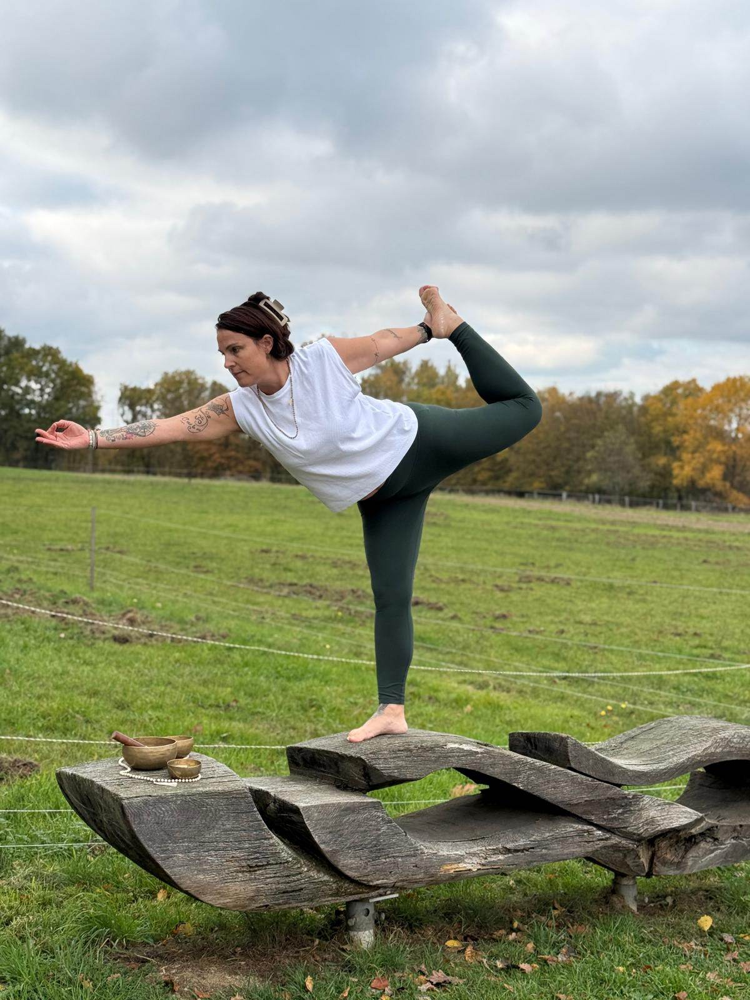
Auf meinem Weg als Entspannungstherapeutin lernte ich verschiedene Entspannungstechniken kennen und landete so beim Vinyasa Yoga. Ein dynamischer Yogastil, der Atem und Bewegung verbindet und körperlich sehr fordernd sein kann!
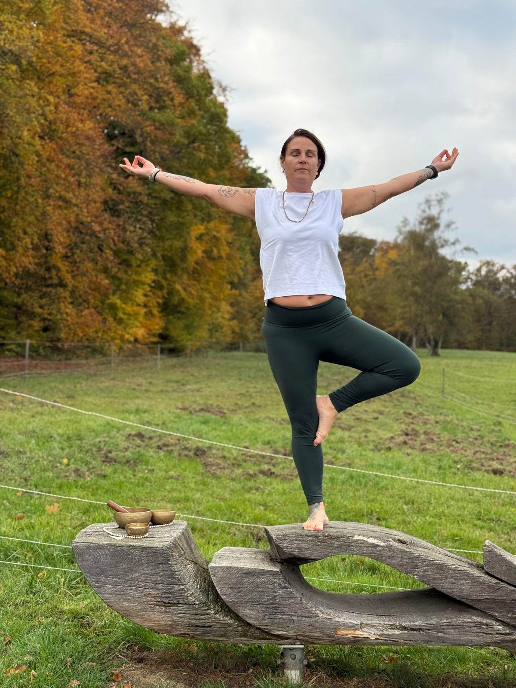
Hier fand ich mein „inneres Zuhause“! Das war 2020, und noch immer spüre ich meine Leidenschaft und das Feuer für diese Yogapraxis.
Meine 2-jährige Yogalehrerausbildung absolvierte ich bei Yoga Vidya. Sie basiert auf dem integralen Yoga – einem ganzheitlichen System, das verschiedene klassische Yogawege miteinander verbindet, um Körper, Geist und Seele gleichermaßen anzusprechen.
Eine Zeit, die sehr prägend und lehrreich für mich war.
Ich fühle mich geerdet, stabil und selbstbewusst wie nie zuvor und bin sehr glücklich, diese Entscheidung getroffen zu haben.
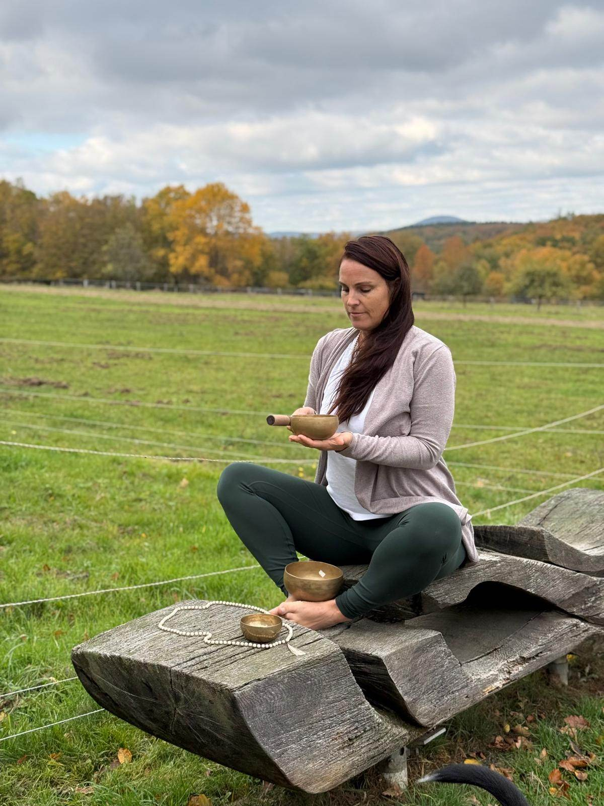
Diese einfühlsame Energie bringe ich auch in meine Massagen ein. Ob bei einer entspannenden Wellnessmassage, einer traditionellen Ayurvedamassage oder den harmonischen Schwingungen einer Klangschalenmassage: Mein Ziel ist es, dass du völlig loslassen kannst.
Mehr zu den MassagenEin paar Momente aus meinem Leben, wenn ich gerade nicht unterrichte.
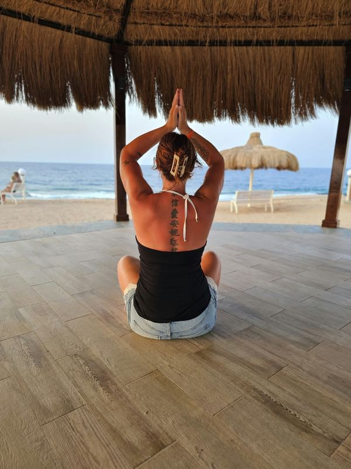
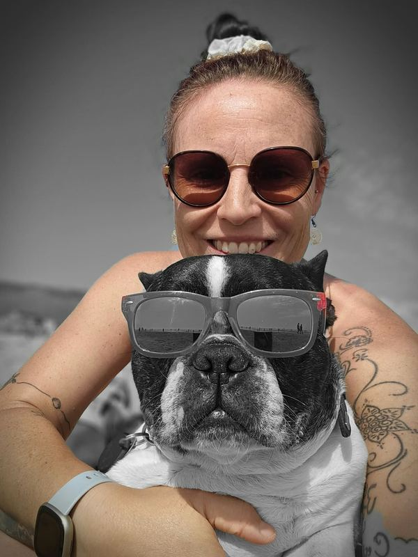
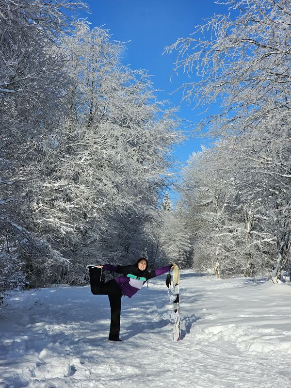
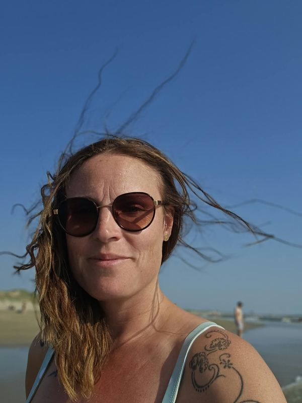
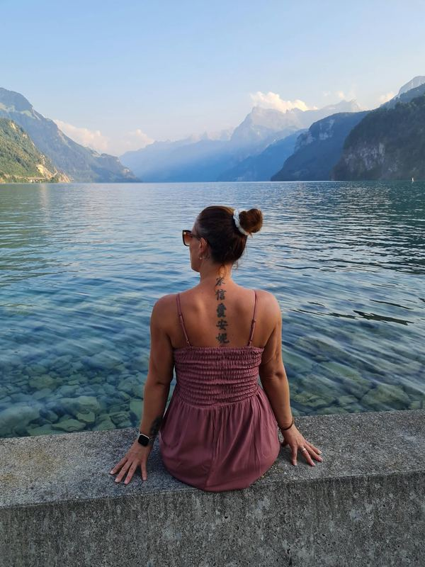
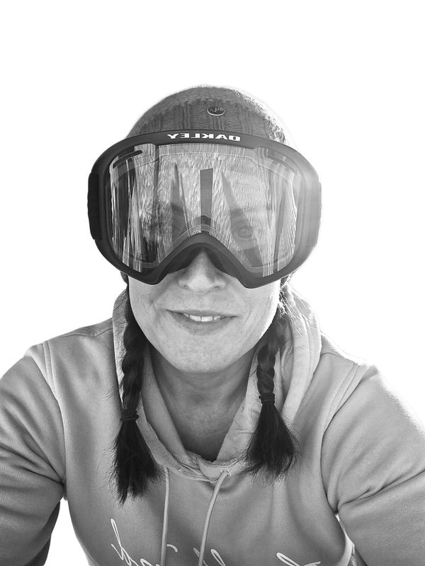
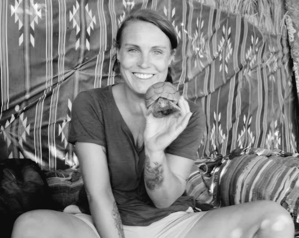
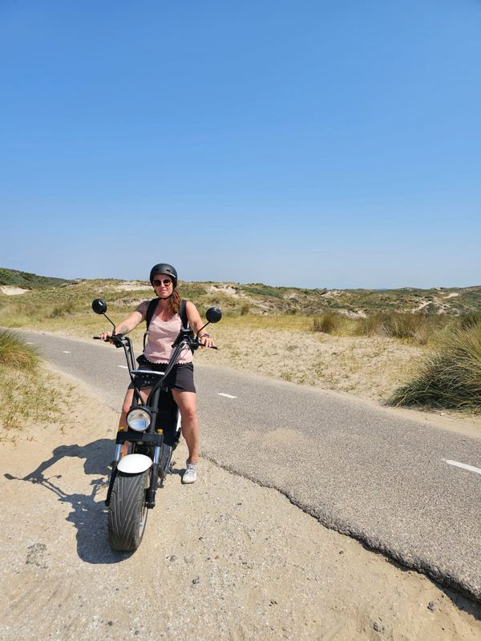
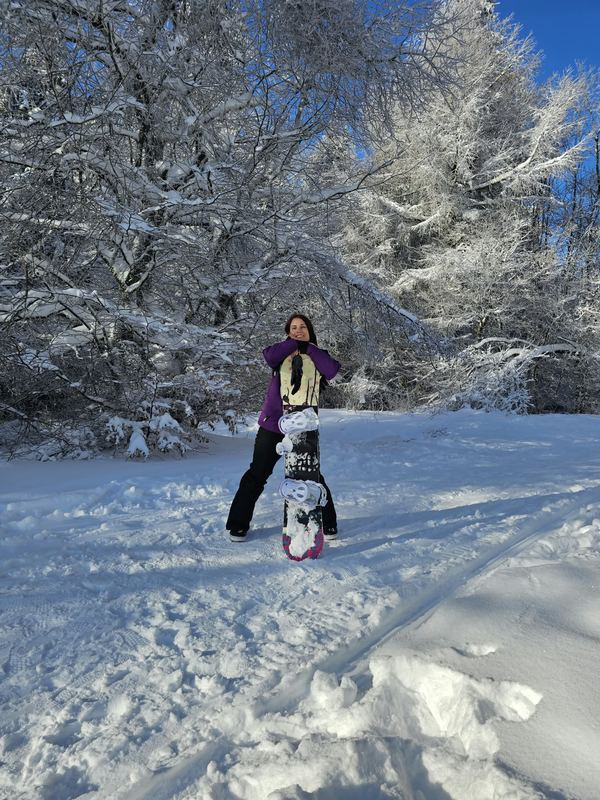
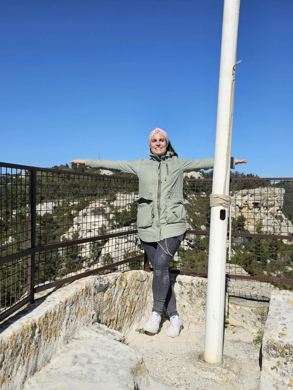
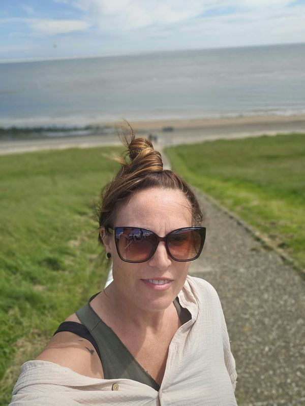
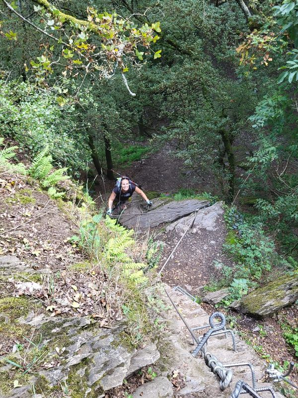
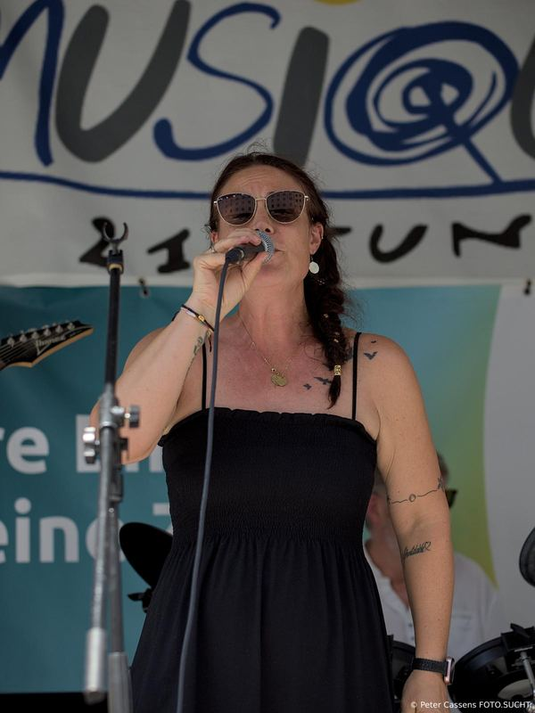
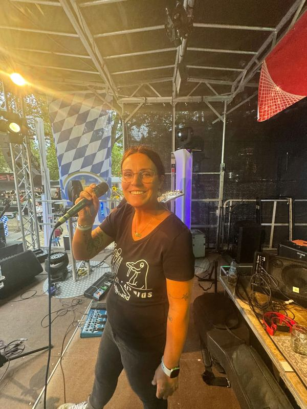
Wenn ich nicht auf der Matte stehe, stehe ich am Mikrofon: Ich bin Leadsängerin der Band Lobby Lizards.
Zur BandAuf der Matte gibt es kein Richtig oder Falsch. Du darfst kommen, wie du bist, ganz ohne Wertung.
Atem und Bewegung im Einklang geben dir Halt, auf der Matte und im Alltag.
Yoga ist ein Weg, auf dem man nie ganz fertig ist. Wir lernen gemeinsam weiter, Stunde für Stunde.
Gruppenkurse buchst du direkt bei Yogaresa. Für Einzelstunden, Massagen und Anfragen von Unternehmen und Einrichtungen schreib mir einfach.